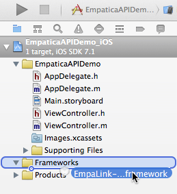
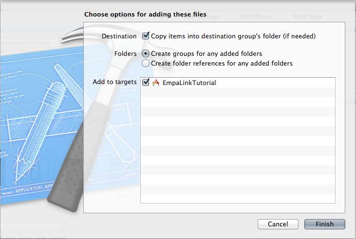
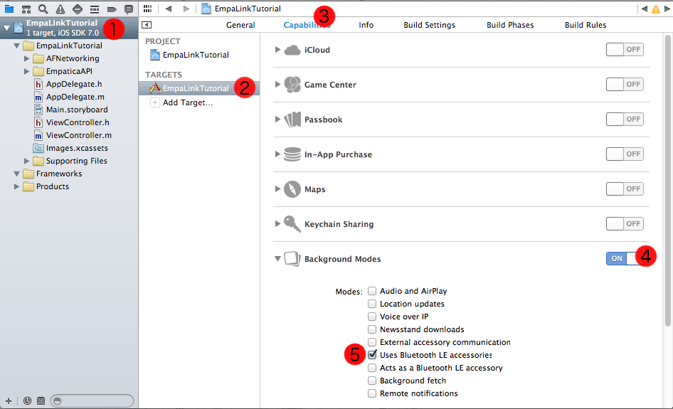

The steps described below assume you are adding the Empatica API to an existing project, or you can also create a new project based on the available example projects.
Download our Xcode example project, already configured for use with the Empatica API, and start using your Empatica E4 in a matter of minutes:
While using our sample projects, you are just required to use your Empatica API key in the ViewController.swift source file just replacing the "ADD_YOUR_KEY_HERE" const value.
Add to your own project
Step 1: Setup
Add Empalink API
Download the E4link.framework for iOS from your Developer Area in Empatica Connect.
Open your existing project.
Drag the E4link Framework into your project's "Frameworks" folder.

Note: Make sure the "Copy items into destination group's folder (if needed)" checkbox is checked.

Add background communication support
EmpaLink communicates with the Empatica device even while the app is in the background. Your app requires the authorization to run CoreBluetooth service in the background to work.
In order to enable background communications, you need to check the right "Background Modes" option in the iOS Target Properties.
In the Project Target, select the "Capabilities" tab.
Enable "Background Modes" by clicking on the switch.
Check "Uses Bluetooth LE accessories".

Step 2: Initialize the API
The final steps to set up the API require adding a few lines of code to your main app delegate. Being the class where you include iOS required methods like applicationDidFinishLaunching.
Import the Empatica API header
At the top of your app delegate source file - and anywhere you invoke the DeviceManager class, you’ll need to include the correct EmpaLink header.
If you downloaded the full version, simply add this line:
// AppDelegate.h#import <EmpaLink-ios-0.7-full/EmpaticaAPI-0.7.h>
Otherwise, add the following line:
// AppDelegate.h#import <EmpaLink-ios-0.7-full/EmpaticaAPI-0.7.h>
Set Your Empatica API Key
The EmpaLink API requires your developer key in order to make any requests to the API. Call this method with your API key when launching your app, adding the following code to your app delegate source file usually AppDelegate.m:
// AppDelegate.h
- (BOOL)application:(UIApplication *)application didFinishLaunchingWithOptions:(NSDictionary *)launchOptions {
[EmpaticaAPI authenticateWithAPIKey:@"HERE_GOES_YOUR_API_KEY"
andCompletionHandler:^(BOOL success, NSString *description)
{
NSLog(@"Empatica API authentication successful: %d", success);
}];
return YES;
}
In your app delegate source file, you also need to implement the following methods:
// AppDelegate.h
- (void)applicationDidEnterBackground:(UIApplication *)application {
[EmpaticaAPI prepareForBackground];
}
- (void)applicationDidBecomeActive:(UIApplication *)application {
[EmpaticaAPI prepareForResume];
}
Step 3: Use the EmpaLink API
Now you are ready to start using the EmpaLink API in your project. If your app will connect to one E4 device at time, read the Single device section below. If your app needs to connect to multiple E4 devices at the same time, please jump to the Multiple Devices section.
Single device
Your main view controller - for example, in the default single view app, ViewController.m must implement the EmpaticaDelegate and EmpaticaDeviceDelegate protocols.
// ViewController.m @interface ViewController () <EmpaticaDelegate, EmpaticaDeviceDelegate>
Ask the API to scan for devices, e.g., when you press a button
// ViewController.m
- (IBAction)ScanForDevicesButtonPressed:(id)sender {
[EmpaticaAPI discoverDevicesWithDelegate:self];
}
Connect to a device
// ViewController.m
- (void)didDiscoverDevices:(NSArray *)devices {
if (devices.count > 0) {
// Connecting to first available device
EmpaticaDeviceManager *firstDevice = [devices objectAtIndex:0];
[firstDevice connectWithDeviceDelegate:self];
} else {
NSLog(@"No device found in range");
}
}
Start receiving samples by implementing EmpaticaDeviceDelegate methods
// ViewController.m
- (void)didReceiveGSR:(float)gsr withTimestamp:(double)timestamp fromDevice:(EmpaticaDeviceManager *)device {
// Do something with the received sample
NSLog(@"GSR value received: %f at timestamp: %lf", gsr, timestamp);
}
Multiple devices
Your main view controller (for example, in the default single view app, ViewController.m) must implement EmpaticaDelegate protocol.
// ViewController.m @interface ViewController () <EmpaticaDelegate>
Ask the API to scan for devices
- (IBAction)ScanForDevicesButtonPressed:(id)sender {
[EmpaticaAPI discoverDevicesWithDelegate:self];
}
Create the E4 device manager
To allow your app to handle multiple devices, you will need to create a class (e.g., E4DeviceManager) implementing EmpaticaDeviceDelegate protocol. Each connected device will have, as a delegate, a different instance of E4DeviceManager class.
// E4DeviceManager.m @interface E4DeviceManager : NSObject
Connect to all discovered devices
// ViewController.m
@property (nonatomic, strong) NSMutableArray *E4DeviceManagers;
// ViewController.m
- (void)didDiscoverDevices:(NSArray *)devices {
if (devices.count > 0) {
for (EmpaticaDeviceManager *device in devices) {
NSLog(@"Device %@ Discovered", device.name);
// Create a DeviceManager for each device
E4DeviceManager *manager = [[E4DeviceManager alloc] init];
[_E4DeviceManagers addObject:manager];
// Connect to E4 device
[device connectWithDeviceDelegate:manager];
}
} else {
NSLog(@"No devices found in range");
}
}
Start receiving samples by implementing EmpaticaDeviceDelegate methods in E4DeviceManager.
// E4DeviceManager.m
- (void)didReceiveGSR:(float)gsr withTimestamp:(double)timestamp fromDevice:(EmpaticaDeviceManager *)device {
// Do something with the received GSR
NSLog(@"[%@] GSR received: %f at timestamp %f", device.name, gsr, timestamp);
}